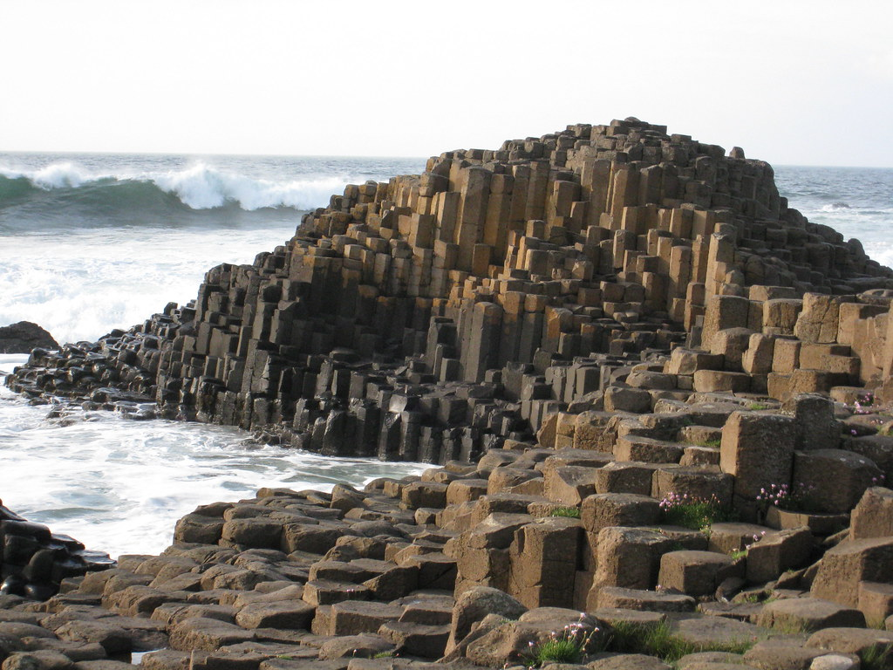

Giant’s Causeway
Tekeekö mielesi larpata tosielämän minecraftia? Onko kulmikkaat pilarit sinun juttusi? Lähde käymään Pohjois-Irlannissa!
Lue lisääTekeekö mielesi larpata tosielämän minecraftia? Onko kulmikkaat pilarit sinun juttusi? Lähde käymään Pohjois-Irlannissa!
Lue lisää
Haluatko käydä aavikolla? Pidätkö 3-vuotiaiden piirrostyylistä? Lähde katsomaan kun aikuiset ovat piirtäneet aavikolle! (Tai alienit)
Lue lisää
Ehdottomasti kohteista mystisin, käänteinen bermudan kolmio. Olet matkalla tänne, mutta seuraavaksi heräät kotoa.
Lue lisääTässä vaihtoehdoista heittämällä paras! Voit kätevästi nauttia nähtävyyksistä oman kodin rauhassa, lempi-boxerit tukevasti jalassa.
"Ei jonoja, ei ihmisiä, ei huolia."
Lue lisääMielenkiintoisia kohteita mielenkiintoisille seikkailijoille! Lähde vaikka Nazcan linjoilta suoraan ihmettelemään kulmikkaita tolppia Giant’s Causewayn lumoaville rannoille. Tästä voit suunnata sitten Tallinnaan, jos onnistut.
Matkanjärjestäjän suosituksesta, tätä seikkailua ei kannata aloittaa Tallinnasta.
Kokemuksia asiakaspalvelusta (tai sen puutteesta) Dick's Last Resortissa tai kylmänviileää, robottimaista tarjoilua Robot Restaurantissa. Lopuksi vielä maha kunnolla täyteen Heart Attack Grillillä, siitä on kunnon ravintolakierrokset tehty.
Hyvä palvelu kuuluu useimpien ruokailijoiden odotuksiin uutta ravintolaa kokeillessaan.
Täällä kannattaa varautua kuulemaan tarjoilijalta kunniansa!
Lue lisääRobot Restaurant -ravintolassa ruokailija voi luvan kanssa unohtaa small talkin - ruoan valmistavat ja tarjoilevat nimittäin robotit.
Lue lisääLas Vegasissa sijaitsevassa Heart Attack Grill -ravintolassa ei kaloreita lasketa - ainakaan jos haluaa säilyttää oman mielenrauhansa.
Lue lisääKukapa ei tuntisi Forrest Gumpia, 90-luvulla Oscareita kahminutta hittielokuvaa? Yhdysvalloissa leffajuonta osattiin hyödyntää myös ravintolabisneksessä perustamalla Bubba Gump Shrimp Company -ravintolaketju.
Lue lisää
Aktiivinen auringonpalvonta. Tämä sykettä nostava hurjastelu usein näyttäytyy harjaantumattomiin silmiin laiskotteluna, jota se ei ole!
Lue lisää
Vuorikiipeilijöistä kuulee aina tarinoita, välillä meno äityy hurjaksikin! Kannattaa aloittaa vuoritorkkuminen, lähde löytämään oma torkkuvuoresi
Lue lisääKalastus on harrastus missä hankitaan kalaa heiluttamalla erilaisia vapoja. Ääniä kalastellaan valehtelemalla. Salakalastus tapahtuu jos vaimo kieltää kalastamisen, mutta menee silti
Lue lisääTämä hyvin suosittu tekemisen muoto on monien harrastuksena jo pienestä pitäen ja tätä rehtiä sekä palkitsevaa aktiviteettia harrastetaankin monesti läpi elämän!
Lue lisääParas aktiviteetti lomalla on keksiä keinoja ja tekosyitä olla tekemättä mitään aktiviteetteja tai osallistua tyhjänpäiväisiin kieroajeluihin monikerrosbusseilla +42c asteen helteessä, kiertoajelun vetäjän kertoessa monotonisella äänellä asioita, jotka eivät kiinnosta ketään.